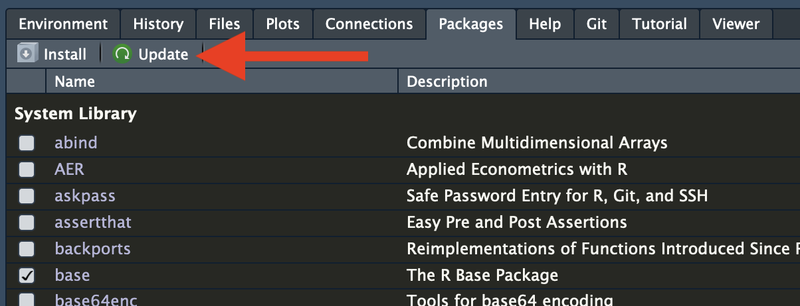
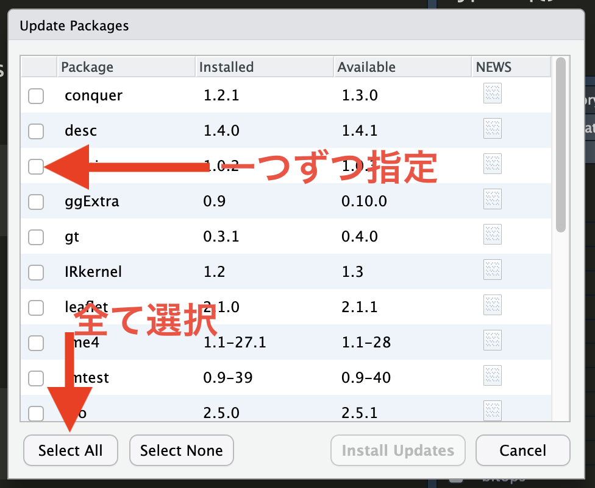

パッケージ
1 インストール
Rには数万以上のパッケージが存在し、Rをインストールするだけでも数十のパッケージが自動的にインストールされる。しかし、データ分析/ハンドリング/可視化の手法は日々発展しており、R内蔵パッケージだけでは対応が難しい (できないわけではない)。したがって、必要に応じて新しいパッケージを導入する必要があるが、パッケージのインストールするにはConsoleペインに以下のように入力する。
install.packages("インストールするパッケージ名")前期の「ミクロ政治データ分析実習」では{tidyverse}パッケージのみ使用する予定である。ただし、本講義ようにセッティングされた環境を導入する場合、{tidyverse}は既に導入済みであるため、以下のコードは実行しなくても良い。
2 アップデート
特定のパッケージをアップデートする方法はインストールと同じだが、一つ一つのパッケージが全て最新バージョンかどうかを確認するのは大変である。また、久々のアップデートで数十個のパッケージをアップデートする必要があるケースもあろう。この場合、RStudioの内蔵機能を使えば一瞬で更新可能なパッケージのリスト化、インストールができる。
手順1: PackagesペインのUpdateをクリックする。

手順2: アップデートしたいパッケージの左にチェックを付けるか、左下のSelect Allをクリックし、右下のInstall Updatesをクリックする。

インストール、またはアップデートの際、以下のようなメッセージが出力される場合がある。
There are binary versions available but the source versions
are later:
binary source needs_compilation
terra 1.5-17 1.5-21 TRUE
yaml 2.2.2 2.3.4 TRUE
Do you want to install from sources the packages which need compilation? (Yes/no/cancel)この場合、Consoleペイン上でYes、no、cancelのいずれかを入力してReturnキー (Enterキー)を押す必要がある。大文字と小文字は区別すること。どうしても最新のパッケージが欲しい場合はYesを入力すれば良いが、インストールに時間がかかる場合がある。一方、noを入力した場合は、若干古いバージョンがインストールされるが、インストールに必要な時間が短いため、基本的にはnoでも問題ないだろう。cancelを入力した場合はアップデートが全てキャンセルされる。
3 教科書
『私たちのR』の第5章「Rパッケージ」: https://www.jaysong.net/RBook/packages.html